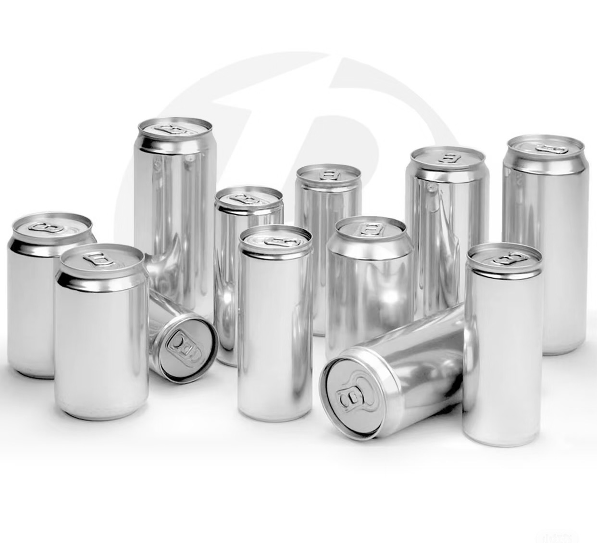
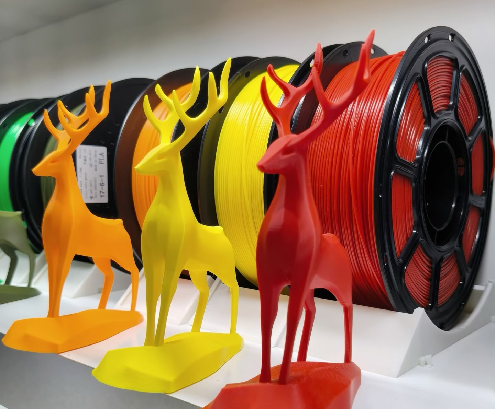
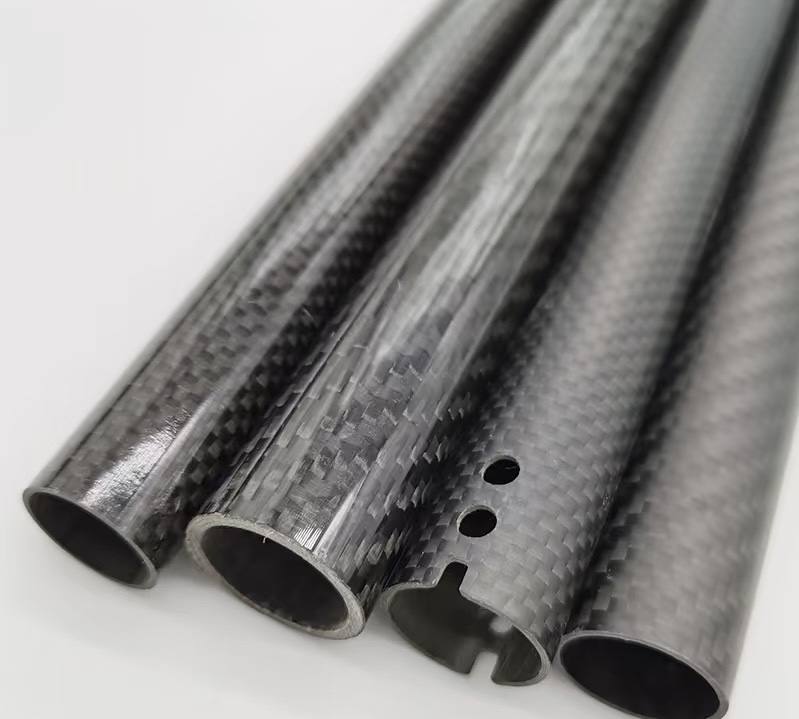
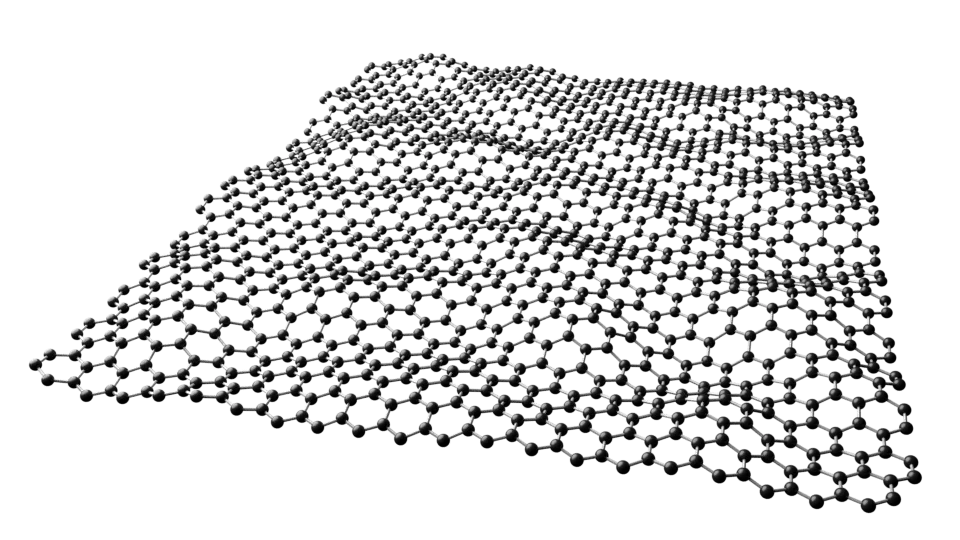
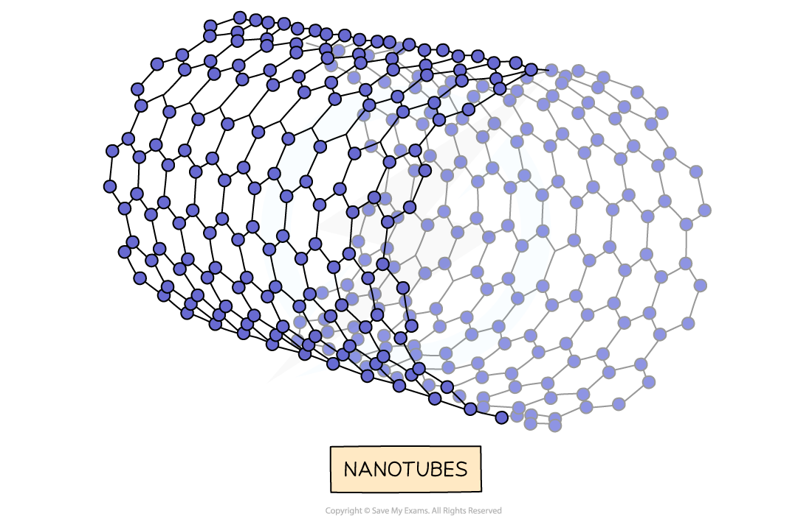
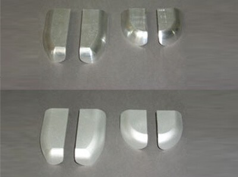
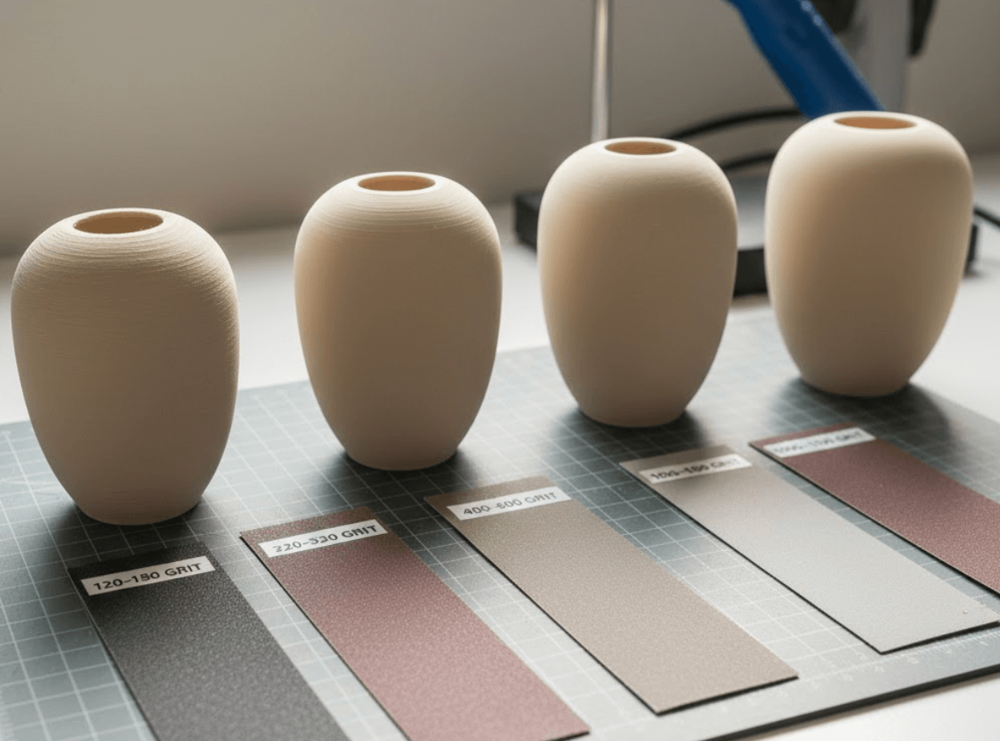
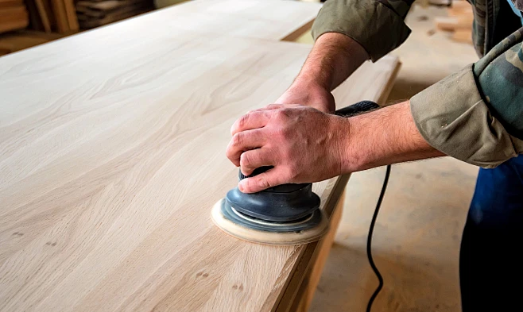
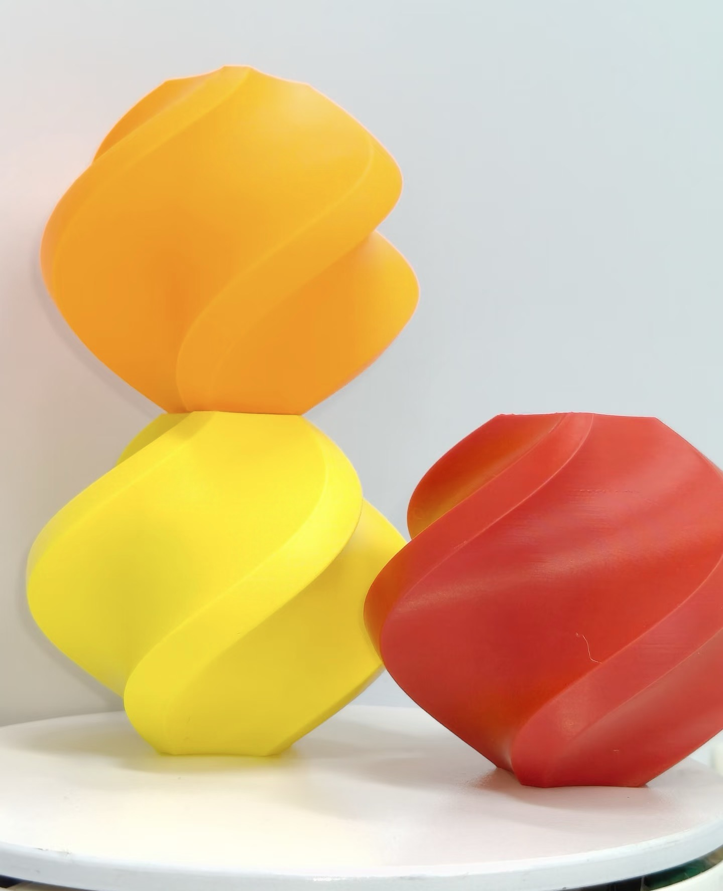

Exercise 7: material
Material Introduction
Exercise Content
- Introduce at least 1 metal，1plastic ，1 composite materials in daily life；
- Find at least 2 new materials;
- Find 1 methods post processing for 1 metal , 1 methods post processing for 1 plastic ,1 methods post processing for wood
- Introduce detail all materails in your final project
Assignment Content
Introduce at least 1 metal，1plastic ，1 composite materials in daily life
1. Metal—aluminum alloy
Basic attributes
- Atomic number: 13
- Position in the periodic table: Third period, Group IIIA
- Color and luster: silvery metallic luster
- Density: approximately 2.7 g/cm³
- Melting point: approximately 660°C
Physical properties
- Conductivity: Aluminum alloy has good electrical conductivity, about 60% that of pure copper
- Thermal conductivity: Aluminum alloy has excellent thermal conductivity, with a thermal conductivity of about 167 W/(m·K)
- Ductility: Aluminum alloy has excellent ductility and can be rolled into thin sheets, drawn into tubes or profiles
- Other characteristics: low density, about one-third that of steel, with excellent corrosion resistance (surface easily forms a dense oxide film)
Chemical properties
- Compounds: Important aluminum compounds include alumina (Al₂O₃), aluminum hydroxide (Al(OH)₃), aluminum chloride (AlCl₃), and others
- Chemical stability: Aluminum is a reactive metal, but its surface easily forms a dense oxide film, giving it good corrosion resistance in the atmosphere. Aluminum is soluble in acids and strong bases, making it an amphoteric metal
Exists in nature
Main mineral: Bauxite (main component is Al₂O₃·nH₂O), alum stone, kaolinite, etc
Industrial preparation
- Raw materials: Industrial production of aluminum is mainly obtained through electrolytic melted alumina (extracted from bauxite).
- Methods: including Bayer process (purification of alumina), Hall-Héroult electrolysis (electrolysis of alumina to aluminum), etc
- Classification: According to the alloying elements added, it can be divided into pure aluminum, aluminum-copper alloy, aluminum-manganese alloy, aluminum-silicon alloy, aluminum-magnesium alloy, etc
Application areas
- Industrial applications: Used to manufacture various mechanical parts, electronic product housings, heat sinks, molds, etc
- Transportation: Used to manufacture automobile bodies, wheel hubs, aircraft skin and structural parts, train bodies, and more
- Construction applications: Used to manufacture door and window frames, curtain walls, roof structures, decorative panels, etc
- Household uses: Used to manufacture cans, cookware, mobile phone frames, laptop cases, furniture, and more
Application scenarios
This enclosure is installed at the bottom and closely fits the internal heating chip, serving to conduct heat and dissipate heat, preventing deformation of the PLA enclosure due to local high temperatures. In daily life, aluminum alloy is widely used in cans, window frames, phone frames, and laptop cases, making it a very common lightweight metal material.

Image source: http://xhslink.com/o/8lLagi3pf3a
2. Plastic—PLA Basic (Polylactic Acid)
Basic attributes
- Chemical formula: (C₃H₄O₂)n, formed by the polymerization of lactic acid monomers
- Classification: Based on optical activity and crystallinity, it can be divided into PLLA (left-hand polylactic acid), PDLA (dextrocaratory polylactic acid), and PDLLA (racemic polylactic acid).
Physical properties
- Appearance: PLA Basic usually has white or pale yellow granules, with printed products ranging from milky white to semi-transparent and a glossy surface
- Density: approximately 1.24 g/cm³
- Melting point: glass transition temperature about 55~60°C, melting temperature about 150~180°C, recommended printing temperature 190~210°C
- Other features: PLA has excellent transparency and gloss, low shrinkage rate (about 0.3%), and almost no odor during printing; It has good biodegradability and can be broken down by microorganisms into water and carbon dioxide under specific conditions
Chemical properties
- Chemical stability: PLA has good tolerance to most organic solvents but is easily soluble in polar solvents such as dichloromethane and chloroform; It has good acid resistance but poor alkali resistance, and hydrolyzes and degrades when exposed to strong alkalis
- Biodegradability: PLA is a bio-based biodegradable plastic that can fully degrade under industrial composting conditions (about 60°C, high humidity).
Advantages and limitations
- Advantages: low printing temperature, low shrinkage rate, high molding precision, good surface gloss, environmentally friendly and odorless, and renewable raw materials
- Limitations: Relatively low thermal deformation temperature (about 55~60°C), prone to softening and deformation in high-temperature environments; Poor weather resistance, degradation after long-term UV exposure; The material is relatively brittle and has inferior impact resistance; It requires high degradation conditions and degrades slowly in natural environments
Application areas
- 3D printing: used to manufacture models, figurines, prototypes, educational materials, and more
- Packaging field: Used to manufacture disposable tableware, food packaging boxes, transparent beverage cups, etc
- Medical field: Used for manufacturing absorbable sutures, bone screws, sustained-release drug carriers, etc
- Textiles: Used to manufacture biodegradable fibers and fabrics
Application scenarios
The main structure of this enclosure uses PLA Basic as the 3D printing material. Its advantages include low printing temperature, minimal shrinkage rate (about 0.3%), minimal edge warping when printing large flat shells, high molding precision, and good surface gloss. In daily life, PLA is widely used in 3D printed models, disposable tableware, and transparent food packaging.

Image source: http://xhslink.com/o/8GzGBXFHCCx
3. Composites — Carbon Fiber Reinforced Nylon (PA-CF)
Basic attributes
- Composition: Made from carbon fiber as the reinforcement material and nylon (polyamide) as the matrix resin composite
- Carbon fiber content: usually 10%~35% (by weight), with specific content varying by grade
Physical properties
- Appearance: Black, with a surface featuring the unique woven or fiber-oriented texture of carbon fiber
- Density: approximately 1.2~1.4 g/cm³ (depending on carbon fiber content)
- Thermal distortion temperature: approximately 140~160°C (higher than pure nylon and PLA, suitable for higher temperature environments)
- Mechanical properties: tensile strength up to 100~150 MPa, bending modulus up to 6~10 GPa
Performance characteristics (performance differences from pure nylon/pure PLA)
Compared to pure nylon: the addition of carbon fiber greatly increases nylon's stiffness and strength, raising the bending modulus from about 2~3 GPa in pure nylon to over 6 GPa; Thermal distortion temperature increased from about 100°C to about 150°C; Dimensional stability is significantly improved, with reduced water absorption (carbon fiber does not absorb water, minimizing dimensional changes caused by moisture absorption in nylon); However, impact strength and elongation at break decrease slightly, and the material becomes brittle. Compared with pure PLA: PA-CF has about 2~3 times the strength of PLA, heat resistance about 80~100°C higher, and impact resistance far superior to PLA, making it suitable for working environments with larger loads and higher temperatures.
Chemical properties
- Chemical stability: Nylon matrix has good tolerance to most hydrocarbon solvents and oils, but is easily corroded by strong acids, strong bases, and polar solvents; Carbon fiber itself is chemically inert and has excellent corrosion resistance
- Moisture absorption: nylon has a certain degree of moisture absorption, and the addition of carbon fiber can reduce the overall moisture absorption rate
Application areas
- Industrial manufacturing: Used to produce drone arms, robot joints, tooling fixtures, lightweight structural parts, and more
- Sports equipment: Used to manufacture racing bike racks, fishing rods, tennis rackets, skis, and more
- Automotive industry: Used to manufacture engine peripheral components, interior structural parts, and lightweight body parts
- Consumer electronics: Used to manufacture high-end phone cases, wearable device casings, drone casings, etc
Application scenarios
The four corner drop protectors and top handles of this housing are printed with PA-CF composite material. The addition of carbon fiber greatly increases the rigidity and strength of nylon, with a bending modulus of over 6 GPa. Its impact resistance surpasses that of ordinary plastics, effectively protecting the casing from damage during drops. In daily life, carbon fiber composites are widely used in high-end drone arms, racing bike frames, and fishing rods, among other lightweight and high-strength scenarios.

Image source: http://xhslink.com/o/7ENwqbmmXem
Two new materials
1.graphene
Basic attributes
- Atomic composition: Composed of single-layer carbon atoms arranged in an SP² hybrid manner to form a two-dimensional honeycomb lattice structure
- Thickness: The single-layer thickness is only 0.335 nm, making it the thinnest material currently known
Key features
Graphene is currently the thinnest, strongest known new two-dimensional nanomaterial (tensile strength about 130 GPa, roughly 200 times that of steel), with excellent thermal and electrical conductivity. It has an extremely high specific surface area (theoretical value of 2630 m²/g) and carrier mobility as high as 200,000 cm²/(V·s), making it one of the most conductive materials currently known.
Performance characteristics
- Mechanical properties: Tensile strength is about 130 GPa, elastic modulus is about 1 TPa, making it the strongest material known to humans
- Thermal conductivity: Single-layer graphene has a thermal conductivity of over 5000 W/(m·K), far surpassing copper and silver
- Electrical conductivity: Extremely high electron mobility, with an electrical resistivity of only about 10⁻⁶ Ω·cm, with better conductivity than metal
- Optical performance: Single-layer graphene has about 97.7% light transmittance, making it almost completely transparent
- Chemical stability: Good chemical stability at room temperature, oxidation and corrosion resistance
Application examples
- Thermal interface materials: Mixed into thermal grease or thermal pads to greatly improve heat dissipation efficiency
- Conductive materials: Used to manufacture transparent conductive films, conductive inks, flexible electrodes, and more
- Composite reinforcements: Added to plastics, rubber, and coatings to enhance mechanical strength and electrical and thermal conductivity
- New energy sector: Used in lithium battery electrode materials, supercapacitors, solar cells, etc
Application scenarios
In this casing, graphene is mixed into thermal grease and applied between the chip and the aluminum alloy heat sink, utilizing its ultra-high thermal conductivity to significantly reduce interfacial thermal resistance and improve heat dissipation efficiency.

Image source: http://www.app17.com/supply/offerdetail/14101614.html
2.Carbon Nanotubes (CNT)
Basic attributes
- Atomic composition: A hollow cylindrical structure formed by rolling single or multiple layers of graphene sheets
- Diameter: Single-walled carbon nanotubes have a diameter of about 0.4~2 nm, multi-walled carbon nanotubes about 2~100 nm
- Aspect ratio: usually reaches over 1000:1, making it a typical one-dimensional nanomaterial
Key features
Carbon nanotubes are tubular one-dimensional nanomaterials formed by coiling carbon atoms, possessing extremely high strength (tensile strength about 50~200 GPa, roughly 100 times that of steel), excellent electrical and thermal conductivity, and a very large aspect ratio. Based on the number of tube wall layers, they can be divided into two main categories: single-walled carbon nanotubes and multi-walled carbon nanotubes.
Performance characteristics
- Mechanical properties: Its tensile strength is more than 100 times that of steel, and its elastic modulus is about 1 TPa, making it one of the strongest and toughest known materials
- Thermal conductivity: axial thermal conductivity reaches 3000~6000 W/(m·K), similar to diamond and graphene
- Conductivity: Excellent conductivity, ballistic transport characteristics make it extremely resistive, capable of carrying extremely high current density
- Electromagnetic shielding performance: The carbon nanotube network structure has excellent electromagnetic shielding performance, with shielding efficiency reaching 40~60 dB
- Chemical stability: resistant to acid and alkali corrosion, good chemical inertness
Application examples
- Electromagnetic shielding coating: Sprayed onto the inner wall of electronic device casings to form a conductive network that shields electromagnetic interference
- Conductive composites: added to plastics to manufacture anti-static or conductive components
- Sensors: Utilizing the ultra-high specific surface area and conductivity of carbon nanotubes to manufacture highly sensitive gas sensors
- Lithium battery electrodes: added as conductive agents to electrode materials to enhance rate performance and cycle life
Application scenarios
In this housing, carbon nanotubes are deposited in a spray form on the inner wall of the shell, forming an ultra-thin conductive network that acts as an electrostatic shielding layer to prevent static electricity buildup caused by friction during daily use, thereby protecting the internal sensitive circuits from damage caused by static discharge.

Three types of post-processing methods
1.Metal post-treatment — sandblasting
Specific steps
- Cleaning and degreasing: Use acetone or industrial cleaning agents to remove oil stains and impurities from the surface of the aluminum alloy heat sink to ensure a clean surface.
- Drying treatment: Place the cleaned workpiece in an oven to dry at about 80~100°C for 15~20 minutes, ensuring no residual moisture remains.
- Clamping protection: Fix the heat sink on the sandblasting machine's worktable, and cover areas that do not require sandblasting (such as mounting holes and positioning surfaces) with high-temperature tape or a dedicated protective cover.
- Sandblasting operation: Start the sandblasting machine, using compressed air as power to spray quartz sand or white alumina abrasives (particle size about 60~120 mesh) at high speed onto the contact surface between the aluminum alloy heat sink and the chip. Jet distance about 100~150 mm, spray angle about 45~75°, duration about 10~30 seconds.
- Surface inspection: Observe whether the sandblasted surface has a uniform matte rough surface, with no missed or oversprayed areas.
- Cleaning and dust: Use compressed air to blow away residual sand and dust from the surface, then wipe clean with anhydrous ethanol.
- Coating protection: After sandblasting, promptly carry out subsequent processes (applying thermal grease or applying anti-oxidation treatment) to prevent further oxidation of the contact surface.
Notes
- Sandblasting pressure should not be too high (recommended 0.4~0.6 MPa), otherwise it will excessively erode the surface and reduce dimensional accuracy.
- The sandblasting particle size should not be too coarse to avoid a rough surface that affects the filling effect of thermal grease.
- Shielding and protection must be in place; abrasive splashing during sandblasting may damage precision mating surfaces or hole position accuracy.
- After sandblasting, the surface has high activity, easily absorbs dust and oxidizes again, and should be treated immediately.
- Protective goggles, dust masks, and gloves should be worn during operation to avoid inhaling dust and abrasives that can harm the eyes.
The third point based on material characteristics: the performance characteristics of aluminum alloy heat sinks
Before sandblasting: The aluminum alloy surface is smooth but has machining marks and oxide layers. The actual contact area between thermal grease and the contact surface is limited, and there is a large amount of air in the microscopic gaps (the thermal conductivity of air is only about 0.026 W/(m·K)), resulting in high interfacial thermal resistance.
After sandblasting: the surface forms a uniform microscopic uneven structure, significantly increasing the specific surface area. The thermal grease can fully fill the gaps between the surfaces and expel air, effectively reducing interfacial thermal resistance. At the same time, sandblasting removes the oxide layer, allowing the fresh aluminum surface to come into direct contact with thermal grease, further improving thermal conductivity efficiency.

Image source: http://www.penshashebei.com/jishu/180.html
2.Plastic post-processing—grinding and spraying
Specific steps
- Coarse sanding: Use 400-grit sandpaper dampened with water and evenly sand along the PLA shell surface, focusing on removing FDM print layers and support residual points, and sand until the surface is basically flat. After about 30 seconds, wipe with a damp cloth to check the effect until the layers become noticeably lighter.
- Fine sanding: Switch to 600-grit sandpaper dipped in water for fine sanding, further eliminating the grinding marks left by 400 grit and smoothing the surface. During sanding, keep the sandpaper flat to avoid over-sanding in areas that can cause the wall thickness to thin.
- Clean and dry: Wipe off surface dust from abrasion with a damp cloth, then dry with a dry cloth. Place in a ventilated area to air dry naturally for about 30 minutes to ensure the surface is completely dry.
- Spraying primer: Hang or place the shell on a stand about 20~30 cm above the surface, evenly spray a layer of plastic-specific primer (to fill in fine layers), apply 2~3 coats, spaced 5~10 minutes between each coat, and let the primer air dry naturally.
- Topcoat spraying: After the primer dries (about 2 hours), spray PU clear coat or colored paint at a distance of about 20~30 cm, evenly spraying 2~3 coats, spaced 10~15 minutes between each coat, taking care to prevent dripping and paint buildup.
- Curing and drying: Place the sprayed casing in a ventilated area to air dry naturally for 24 hours, or place it in an oven at 40~50°C for about 2 hours to dry the paint film completely.
- Finished product inspection: Check whether the surface is smooth and free of particles, color differences, and sagging, and whether the texture is fine.
Notes
- PLA will soften and deform above 60°C. Do not use hot air guns for high-temperature drying; use cold air or natural drying.
- When sanding, be sure to use sandpaper dipped in water (wet sanding) to prevent PLA powder from clogging the sandpaper and reduce dust dispersion.
- When spraying, the distance should not be too close (<15 cm), otherwise it can cause spillage and paint buildup; The distance should not be too far (>35 cm), otherwise the paint surface will appear granular and uneven.
- Each spray should be thin and even; it's better to spray several times than to spray too thickly at once.
- The spraying environment should be clean, dust-free, well-ventilated, and avoid impurities from landing on the undried paint surface.
The third point based on material characteristics: the advantages and limitations of PLA
Advantages: PLA prints at low temperatures (190~210°C), low shrinkage rate (about 0.3%), odorless printing, good surface gloss, high molding precision, and renewable and environmentally friendly raw materials. After grinding and spraying, the texture completely disappears, the surface can achieve the texture of injection-molded parts, and waterproof and abrasion resistance are significantly improved.
Limitations: PLA heat-deformation temperature is only about 55~60°C, and it is prone to softening and deformation in high-temperature environments, so it cannot be baked at high temperatures after spraying. PLA is brittle in texture and less impact-resistant than ABS, so it is recommended for housings with less stress. Additionally, PLA degrades after long-term exposure to ultraviolet rays, so spraying varnish provides UV protection, compensating for this shortcoming.

Image source: https://makers101.com/guide-to-fdm-3d-print-post-processing/
3.Wood post-processing—sanding, heating, and applying the soldering to wax
Specific steps
- Coarse sanding: Lay the cherry wood sheet flat on the workbench, then use 240-grit sandpaper to sand evenly along the grain direction (longitudinally) to remove burrs, saw marks, and uneven surfaces left from the cut. Sanding until the wood surface has no obvious blemishes and the surface feels initially smooth to the touch.
- Medium sanding: Switch to 400-grit sandpaper and also finely sand along the wood grain direction to remove the coarse grinding marks left by 240 grit. During sanding, you can check the smoothness by touch until there are no obvious scratches on the surface.
- Fine sanding: Switch to 600-grit sandpaper for final fine sanding, making the wood surface smooth and fine, with clear wood grain. After sanding, wipe off surface dust with a dry cloth and check whether the surface is sufficiently smooth.
- Waxing preparation: Cut natural beeswax into small pieces or chips, and place an appropriate amount on the surface of the wood chip. Use a hair dryer to the hot air setting (about 120~150°C) to evenly heat the wood chip surface, allowing the beeswax to gradually melt.
- Wax penetration: While heating, use a soft cloth or brush to evenly spread the melted beeswax, heating continuously for about 2~3 minutes to allow the beeswax to fully penetrate the internal pores of the wood fibers. The amount of wax should just cover the wood surface with a thin layer of wax; too much wax will cause the surface to become sticky.
- Cooling and curing: Stop heating and let the wood chips sit at room temperature for about 30 minutes to allow the beeswax to cool and cure naturally. Once the wax layer is fully hardened, the wood chip surface will have a matte waxy texture.
- Polishing: Use a clean, soft cloth (such as cotton or wool felt) to repeatedly rub and polish the wood chip surface until it becomes lustrous, smooth to the touch, and non-sticky.
- Installation and fixing: Embed the treated cherry wood sheets into the grooves on the front of the shell using strong double-sided tape or specialized woodworking glue, then compact and secure them.
Notes
- Sanding must always follow the direction of the wood grain; do not grind horizontally or in circles, as this will leave cross-grinding marks and ruin the grain's appearance.
- The grit of sandpaper should increase step by step; skipping grades is not allowed (for example, jumping directly from 240 mesh to 600 mesh), otherwise the intermediate wear marks cannot be eliminated.
- When pressing the candle, the hair dryer temperature should not be too high (avoid exceeding 150°C) to prevent cracking or discoloration of the wood chips from heating.
- After waxing, it must be fully cooled to room temperature before polishing; otherwise, the beeswax will not fully cure and the polishing effect will be poor.
- Beeswax used for ironing should be pure natural beeswax, avoiding wax products containing chemical additives.
The third point based on material characteristics: improved performance after wood waxing
Cherry wood before waxing: The surface is rough, with burrs and fine cracks. The wood fibers have many open pores, which easily absorb moisture and deform. Once stained, they are difficult to clean, and the appearance appears matte natural wood.
Waxed cherry wood: Beeswax fully penetrates the pores of the wood fibers, sealing the capillary channels of the wood and giving the wood chips excellent waterproof and moisture-proof properties. During daily use, sweat stains or minor stains can be easily wiped off. At the same time, the hot wax makes the wood grain clearer and more vivid, the color deeper, the hand feel warm and delicate, and the tactile quality is significantly improved compared to untreated wood. Additionally, beeswax is a natural material, non-toxic and odorless, making it suitable for use with electronic product casings.

Image source: https://huaban.com/pins/5051887427
Introduce detail all materails in your final project
PLA Basic
1 - Features:
- Low shrinkage rate (about 0.3%): When printing large flat shells, edges are less likely to warp, forming dimensions are stable, making it suitable for printing thin-walled shells.
- Low printing temperature (190~210°C): Prints without a heated bed, safe and convenient to operate in classrooms or laboratories, and produces no pungent odors during printing.
- Good insulation performance: PLA is an excellent electrical insulation material that can safely enclose internal circuits and prevent short-circuit risks.
2 - Application in the project:
The final assignment for this term will be modeled in the offline segment of the shell, which is basically printed and molded using PLA Basic. As the main material of the casing, PLA Basic ensures dimensional accuracy during printing with its low shrinkage rate, allowing the top and bottom covers to fit tightly. Its lower printing temperature reduces equipment requirements, allowing easy printing in laboratory environments. Additionally, PLA has excellent electrical insulation. When enclosing internal circuits as a casing, it effectively isolates external contact, prevents accidental short circuits, and protects internal components from dust and physical impacts. After printing, the PLA casing surface shows a good gloss, and after simple polishing and spraying, the appearance can be further enhanced Pattern.

Image source: http://xhslink.com/o/8i2Q9iDklk6